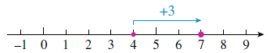
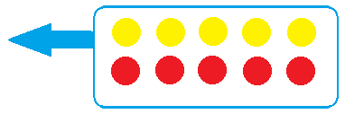
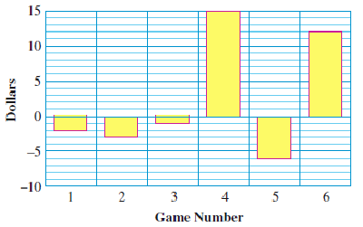

Subsection 7.1.1 Adding Two Numbers with the Same Sign
We'll use number lines to help us add signed numbers. You already know how to add two positive numbers; let's see how that looks on a number line.
Example 7.1.1.
Use a number line to illustrate the sum \((+4) + (+3)\)
Solution.Plot the first number,
\(+4\text{,}\) as shown on the number line below.

From that point, move 3 units in the
positive direction, or to the right. This brings us to
\(+7\text{,}\) so
\((+4) + (+3) = 7\text{.}\)
Checkpoint 7.1.2.
Illustrate the sum
\((+2) + (+5)\) on the number line.
\begin{equation*}
(+2)+(+5) =
\end{equation*}
What about the sum of two negative numbers? For example, what is
\begin{equation*}
(-5) + (-3)~ ?
\end{equation*}
We'll use ideas about money to illustrate negative numbers.
Think of negative numbers as representing debts. It makes sense that the sum of two negative numbers is another negative number: if you owe $5 to one person and $3 to another person, then you are $8 in debt.
Example 7.1.3.
Use a number line to illustrate the sum \((-5) + (-3)\)
Solution.Plot the first number,
\(-5\text{,}\) as shown on the number line below.
From that point, move 3 units in the
negative direction, or to the left. This brings us to
\(-8\text{,}\) so
\((-5) + (-3) = -8\text{.}\)
Checkpoint 7.1.4.
Illustrate the sum
\((-1) + (-5)\) on the number line.
\begin{equation*}
(-1)+(-5) =
\end{equation*}
From the examples above, we see that:
Adding Two Numbers with the Same Sign.
The sum of two positive numbers is positive.
The sum of two negative numbers is negative.
Subsection 7.1.2 Adding Two Numbers with Opposite Signs
Now suppose you have $6, but you owe someone $8. Your financial status is described by
\begin{equation*}
(+6) + (-8)
\end{equation*}
Your debts are greater than your assets, so you are $2 in debt.
Example 7.1.5.
Use a number line to illustrate the sum \((+6) + (-8)\)
Solution.Plot the first number,
\(+6\text{,}\) as shown on the number line below.
From that point, move 8 units in the
negative direction, or to the left. This brings us to
\(-2\text{,}\) so
\((+6) + (-8) = -2\text{.}\)
Checkpoint 7.1.6.
Illustrate the sum
\((-9) + (+2)\) on the number line.
\begin{equation*}
(-9)+(+2) =
\end{equation*}
So if your debts are greater than your assets, you end up in debt. What if your assets are greater than your debts? In that case, your net worth is positive. Suppose you have $10, but you owe someone $6. We can represent this situation by the sum
\begin{equation*}
(+10) + (-6)
\end{equation*}
Once you pay off your debt, you still have $4 left.
Example 7.1.7.
Use a number line to illustrate the sum \((+10) + (-6)\)
Solution.Plot the first number,
\(+10\text{,}\) as shown on the number line below.
From that point, move 6 units in the
negative direction, or to the left. This brings us to
\(+4\text{,}\) so
\((+10) + (-6) = +4\text{.}\)
Checkpoint 7.1.9.
Illustrate the sum
\((-4) + (+8)\) on the number line.
\begin{equation*}
(-4)+(+8) =
\end{equation*}
\(\large{\blert{\text{Summary}}}\)
From the examples above, we see that the sum of a positive number and a negative number can be either positive or negative. It depends on which is "bigger," (farther from zero), the positive number or the negative number.
If the positive number is farther from zero, the sum will be positive.
If the negative number is farther from zero, the sum will be negative.
In other words, if your assets outweigh your debts, your net worth is positive. If your debts outweigh your assets, your net worth is negative.
So now we know the sign of the answer when we add two numbers of opposite signs, but how do we find its actual value? Look again at the examples above. Forget about the signs for a moment. If we subtract the two numbers, we find out by how much the "bigger" number outweighs the smaller one. Then we use the appropriate sign, positive or negative, for the answer.
This makes sense if we consider another example about money. Suppose you earn $20, but you have a debt of $15. Your financial status is given by
\begin{equation*}
(+20) + (-15)
\end{equation*}
You need $15 of your earnings to pay off the debt, so we subtract $15 from $20. The remainder, $5, is your net worth.
Number lines give us a visual representation of signed numbers, but some people prefer a more concrete model. In the next Activity we offer a different way to think about adding signed numbers.
Activity 7.1.1. Adding Two Numbers with Opposite Signs.
For this Activity you will need some counters, such as chips or blocks, in two different colors. One color represents positive numbers, and the other color represents negative numbers. You can choose which is which.
Positive numbers are
Negative numbers are
We'll place counters on the table to represent sums of signed numbers.
Let's start with zero sums. Suppose you have $5 in your wallet, and you spend $5 on coffee and a cookie. What is your financial status now?
\begin{equation*}
(+5)+(-5) = 0
\end{equation*}
When we add two numbers that are opposites, we get zero. We represent the zero sum
\((+5)+(-5)\) with counters like this:

Because the sum is zero, we can remove them from the table. An empty table represents the number 0.
-
Now we'll consider a sum of two numbers with opposite signs. Represent
\begin{equation*}
(+7)+(-3)
\end{equation*}
by placing 7 positive counters and 3 negative counters on the table.
You can remove the zero sum
\((+3)+(-3)\) from the table. What do you have left?
You have just shown that \((+7)+(-3) = +4\text{.}\) But here's the important part: You started with more positive counters than negative counters. You took away or subtracted 3 of the 7 positive counters to make a zero sum, and you were left with 4 positive counters.
Use your counters to find the following sums of signed numbers.
\(\displaystyle (+6)+(-3) = \fillinmath{XXX}\)
\(\displaystyle (+8)+(-6) = \fillinmath{XXX}\)
\(\displaystyle (-3)+(+5) = \fillinmath{XXX}\)
\(\displaystyle (-4)+(+9) = \fillinmath{XXX}\)
For each sum in part 3, were there more positive blocks or more negative blocks?
For each sum in part 3, was the answer positive or negative?
For each sum in part 3, how many zero pairs did you remove?
Use your counters to find the following sums of signed numbers.
\(\displaystyle (+2)+(-4) = \fillinmath{XXX}\)
\(\displaystyle (+6)+(-8) = \fillinmath{XXX}\)
\(\displaystyle (-6)+(+5) = \fillinmath{XXX}\)
\(\displaystyle (-5)+(+2) = \fillinmath{XXX}\)
For each sum in part 6, were there more positive blocks or more negative blocks?
For each sum in part 6, was the answer positive or negative?
For each sum in part 6, how many zero pairs did you remove?
Look back at your answers to Exercise 3 and Exercise 6. Do you see a way to find the sums without using counters?
How can you predict whether the sum will be positive or negative?
Now ignore the signs of the two numbers being added. To get the answers would you add those two numbers or subtract them?
Can you explain your answer to part (b) in terms of zero sums?
Explain to a classmate how to add two numbers with opposite signs.
Which model for adding signed numbers was more helpful for you, number lines or counters? Do you find that you can visualize addition without a physical model?
Exercises 7.1.5 Practice 7-1
Exercise Group.
For Problems 1-10, use number lines to illustrate the sums.
1.
\((+4) + (+5)\)
2.
\((+3) + (+6)\)
3.
\((-2) + (-6)\)
4.
\((-7) + (-2)\)
5.
\((-3) + (+7)\)
6.
\((-9) + (+4)\)
7.
\((+10) + (-12)\)
8.
\((+8) + (-5)\)
9.
\((-8) + (+4)\)
10.
\((+1) + (-6)\)
11.
Is the sum of two negative numbers positive or negative? When you are adding signed numbers, do "two negatives make a positive"?
12.
How can you predict whether the sum of two signed numbers will be positive or negative?
13.
Use assets and debts to explain why you should subtract the unsigned parts of the numbers when you add two numbers with opposite signs.
14.
Make up an example about money that shows how to add two negative numbers.
Exercise Group.
For Problems 15-16, without calculating, say whether the sum will be positive or negative.
15.
\(\displaystyle (+8)+(-6)\)
\(\displaystyle (-8)+(-6)\)
\(\displaystyle (-8)+(+6)\)
16.
\(\displaystyle (-20)+(+30)\)
\(\displaystyle (-20)+(-30)\)
\(\displaystyle (+20)+(-30)\)
17.
For each sum in Problem 15, describe how you would illustrate the calculation with colored counters:
How many counters of each color would you put on the table?
How many counters of each color would you remove?
How many counters of each color would be left?
18.
Repeat Problem 17 for the sums in Problem 16.
Exercise Group.
For Problems 19-28,
Rewrite each sum with as few parentheses as possible.
Use the Rules for Addition to compute the sums.
19.
\((-5) + (-6)\)
20.
\((-3) + (-9)\)
21.
\((-8) + (-8)\)
22.
\((-15) + (-15)\)
23.
\((+12) + (-5)\)
24.
\((+14) + (-4)\)
25.
\((-6) + (+13)\)
26.
\((-7) + (+19)\)
27.
\((-5) + (+5)\)
28.
\((-2) + (+2)\)
Exercise Group.
Use the Rules for Addition to compute the sums in Problems 29-40.
29.
\(-8+2\)
30.
\(-10 + (-3)\)
31.
\(-17 + 4\)
32.
\(-30 + 5\)
33.
\(9 + (-18)\)
34.
\(4 + (-15)\)
35.
\(21 + (-15)\)
36.
\(17 + (-14)\)
37.
\(-16 + (-18)\)
38.
\(16 + (-18)\)
39.
\(-29 + 7\)
40.
\(-32 + (-4)\)
Exercise Group.
Use a calculator to compute the sums in Problems 41-50.
41.
\(-38 + (-76)\)
42.
\(-39 + (-84)\)
43.
\(-0.5 + (-0.3)\)
44.
\(-2.5 + (-3.5)\)
45.
\(-136 + (-245)\)
46.
\(318 + (-205)\)
47.
\(13.8 + (-18.3)\)
48.
\(-6.9 + 15.7\)
49.
\(-2.05 + 6.54\)
50.
\(-0.15 + (-1.23)\)
51.
Use an example about money to explain why the sum of two opposites is always zero.
52.
What number can you add to \(18\) to produce a sum of 0?
What number can you add to \(-12\) to produce a sum of 0?
Exercise Group.
For Problems 53-58,
Write a sum of signed numbers to describe the problem.
Compute the sum and answer the question in the problem.
53.
Yariv lost 27 pounds on his diet, but then gained back 6 pounds over the holidays. What is the net change in Yariv's weight?
54.
The Spartans gained 16 yards on their first down, but then lost 7 yards on their next play. What was their net change in position?
55.
The Mountaineering Club hiked up 1200 feet to the top of a ridge, and then descended into a valley 1400 feet below the summit of the ridge. What was their net change in elevation?
56.
Bruno is trying to bake potatoes. He increased the oven's temperature by 125° when he grew impatient, but then decreased the temperature by 75° when the skins started to burn. What was the net change in the oven temperature?
57.
he captain of Flight 386 descended 5000 feet to avoid turbulence in the upper atmosphere, and then descended another 1800 feet on the approach to a small airport. What was the plane's net change in altitude?
58.
The temperature is expected to drop 15° by this afternoon, and then drop another 18° overnight. What will be the net temperature change by tomorrow morning?
59.
The bar graph shows the quarterly profits earned by Orinoco.com in one year. (A negative "profit" is a loss.)
What are the profits for the four quarters shown?
What was Orinoco.com's total annual profit for that year?
60.
The bar graph shows how much Kayla won in each of the six games of poker she played.

Write Kayla's poker record as a sum of signed numbers.
What was the financial outcome of Kayla's poker session?
61.
The bar graph shows the water level in the reservoir, relative to its normal depth of 34 feet. For example, in January, when the level was 3 feet above normal, the water depth was \(34 + 3 = 37\) feet.
-
Using values from the bar graph, fill in the table.
| \(\hphantom{00}\) |
Jan |
Feb |
Mar |
Apr |
May |
Jun |
Jul |
Aug |
Sep |
Oct |
Nov |
Dec |
| Relative water level |
\(3\) |
\(\hphantom{00}\) |
\(\hphantom{00}\) |
\(\hphantom{00}\) |
\(\hphantom{00}\) |
\(\hphantom{00}\) |
\(\hphantom{00}\) |
\(\hphantom{00}\) |
\(\hphantom{00}\) |
\(\hphantom{00}\) |
\(\hphantom{00}\) |
\(\hphantom{00}\) |
| Water depth |
\(37\) |
\(\hphantom{00}\) |
\(\hphantom{00}\) |
\(\hphantom{00}\) |
\(\hphantom{00}\) |
\(\hphantom{00}\) |
\(\hphantom{00}\) |
\(\hphantom{00}\) |
\(\hphantom{00}\) |
\(\hphantom{00}\) |
\(\hphantom{00}\) |
\(\hphantom{00}\) |
-
Use the grid below to make a bar graph showing the actual depth of the water in the reservoir.
62.
The bar graph shows the annual rainfall in Los Angeles, relative to the average value of 15 inches over the previous century. For example, in 1987 rainfall was 6 inches below normal, or \(15-6=9\) inches.
-
Using values from the bar graph, fill in the table.
| \(\hphantom{00}\) |
'87 |
'88 |
'89 |
'90 |
'91 |
'92 |
'93 |
'94 |
'95 |
'96 |
| Deviation from average |
\(-6.0\) |
\(\hphantom{00}\) |
\(\hphantom{00}\) |
\(\hphantom{00}\) |
\(\hphantom{00}\) |
\(\hphantom{00}\) |
\(\hphantom{00}\) |
\(\hphantom{00}\) |
\(\hphantom{00}\) |
\(\hphantom{00}\) |
| Annual rainfall (in) |
\(9.0\) |
\(\hphantom{00}\) |
\(\hphantom{00}\) |
\(\hphantom{00}\) |
\(\hphantom{00}\) |
\(\hphantom{00}\) |
\(\hphantom{00}\) |
\(\hphantom{00}\) |
\(\hphantom{00}\) |
\(\hphantom{00}\) |
-
Use the grid below to make a bar graph showing the annual rainfall in Los Angeles over the decade from 1987 to 1996.